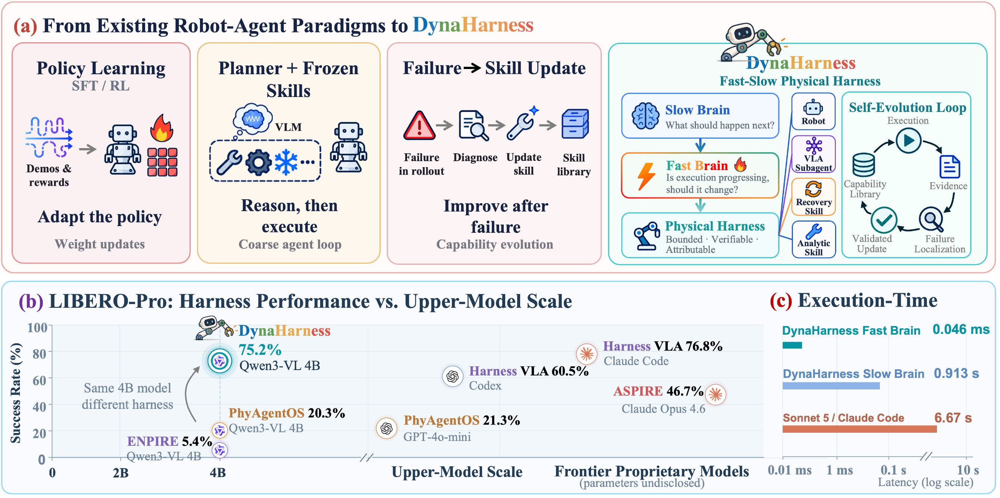
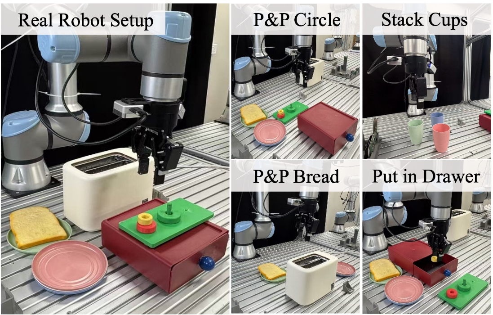
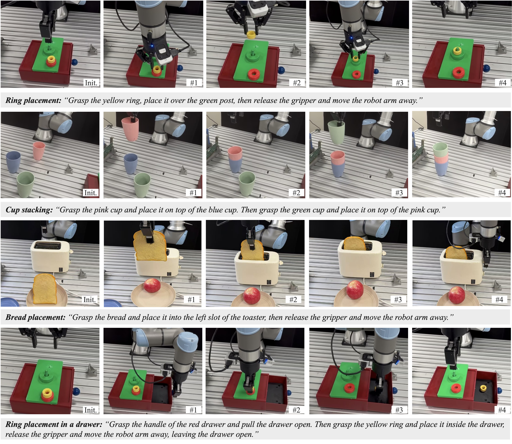

A slow brain proposes. A fast brain grounds, monitors, refuses and substitutes at 2 Hz. One execution contract bounds every command to a frozen VLA, analytic skills and recovery skills. Failure evidence becomes validated capability revisions.
Pretrained robot policies provide useful action priors, but long-horizon manipulation still requires coordination between semantic reasoning and physical execution. Semantic reasoning operates at a coarser timescale than physical interaction, while episode-level failures provide limited guidance on which system component should be revised.
DynaHarness is a dynamic physical harness that couples semantic reasoning with physical governance through a shared execution contract and turns failure evidence into validated capability revisions. The slow brain proposes capabilities and symbolic arguments; the fast brain grounds and monitors commands, refuses unresolved actions, substitutes capabilities and requests replans when needed. The contract bounds each accepted command and records execution evidence across analytic skills, recovery skills and the frozen VLA. Failure attribution localizes faults in these records and directs targeted revisions; paired regression checks govern admission or rejection.
On LIBERO-Pro, DynaHarness achieves 75.2% on 800 newly sampled initial states, compared with 17.5% for the frozen policy. With the same capability library, full dynamic execution reaches 74.0% versus 63.9% under nominal one-step replanning.
One execution contract grounds, bounds and refuses commands across analytic skills, recovery skills and a frozen VLA, recording evidence for revision.
On-demand semantic reasoning and 2 Hz physical governance coordinate monitoring, substitution, recovery and replanning beyond nominal one-step replanning.
Execution records localize failures and direct targeted revisions; paired regression checks govern admission; frozen snapshots keep their gains on new states.

In turn off the stove, the frozen policy turned the knob off at step 44 and back on by step 55: success held for 0.55 s. A planner that observes the scene once every few seconds never sees it. DynaHarness reads the benchmark predicate at every control chunk, latches it, and lets the 2 Hz fast brain end the command.
Control steps run at 20 Hz, fast-brain decisions at 2 Hz, plan steps on demand. The slow brain does not drive the robot; the fast brain holds execution authority because it runs at a rate at which physical events can be observed. A 50 Hz envelope, lease and budget check sits underneath both.
In the analyzed round, 254 of 258 recorded failures ended at 99% or more of their budget while successes ended at a median of 67%. Across 5,805 episodes a failure spends 173 steps after its last progress against 51 for a success, and 220 when the planner layer failed. Detecting unproductive execution and supplying an effective replacement are separate requirements: the harness does both, through refusal, substitution and recovery inside the episode.
Hover or tap a paradigm. Existing harnesses place a planner over a pretrained policy and treat checking as a pipeline stage; self-improving systems start from a failed task. DynaHarness gives execution an authority at the physical rate and gives evolution a layer to charge.
| Property | Policy learning | Planner + frozen skills | Failure → skill update | DynaHarness |
|---|---|---|---|---|
| Semantic reasoning above the policy | – | ✓ | ✓ | ✓ |
| Execution authority at the physical rate (2 Hz decision, latched verdict) | – | pipeline stage | – | ✓ |
| Refusal is a recorded value with a reason | – | – | – | ✓ |
| Frozen VLA is one callable capability next to analytic and recovery skills | – | some | some | ✓ |
| Improvement without weight updates | – | ✓ | ✓ | ✓ |
| Failure localized to one of N ordered layers before revision | – | – | task-level | ✓ |
| Paired gate and broader regression check that can reject a change | – | – | varies | ✓ |
The matrix summarizes the paradigms as characterized in the paper's introduction and related work; individual systems differ.
Figure 2 of the paper, live: particles trace the context, advisory, command and evidence paths. Click any panel or box for its description and equations.
Each DynaHarness clip is re-rendered from the episode's own event store, tool call by tool call, and reproduces the paper's keyframes pixel for pixel. The frozen-policy clip is a fresh rollout of the same seed recorded for this page, since π0.5 sampling is not seeded; it failed at the full budget, as the paper's episode did. Press play or drag the slider; the evidence store follows.
Successful episodes exist despite individual capability failures. turn_knob_object completes 21% of its invocations while its source cell improves from 0% to 95%. Refusing push_object in favor of carrying the plate turns a cell from 0% to 40%: the library supplies the alternative and execution governance decides when to select it.
Of 770 archived control episodes, 570 never invoke the VLA, with 96.7% success. Policy calls concentrate in difficult episodes after analytic execution struggles; in retained failures the VLA reaches 91.4% of steps in the hardest cells, where no cell exceeds 35%.
One failed task is compatible with quite different repairs: the target was not grounded, the dispatched capability does not work, the verifier read the wrong instant, or recovery restored nothing. Attribution names the earliest of 13 ordered layers whose check fails, and the revision is stated in physical quantities rather than keyed to a task.
A local improvement is not a global one: the rejected round also contained a genuine local gain (the hinged-door capability raised the microwave cell from 0% to 25%). Judged by the round total the two changes would have been kept or discarded together; the per-cell comparison kept one and reverted the other.
Every chart has a table twin. Numbers are those of the paper: full-denominator benchmark success, 200 episodes per cell, benchmark predicate as the verdict.
Replacing Qwen3-VL-4B with Claude Sonnet 5 through a coding agent gives 80% against 75% over 40 episodes on four untuned cells, and 75% with a tuned prompt, at 5.9× the latency per call and 18× the prompt tokens. In matched PhyAgentOS runs, changing the upper model from Qwen3-VL-4B to GPT-4o-mini changes success by one point.
The evidence stores hold 2.59 million decisions over 27,581 episodes with the state the fast brain saw, the capability mask, the action and its reason. A learned variant matches the deterministic rule at 593 of 800 on the paired online comparison and escalates less often (12.2 against 15.4 per episode).
Qwen 4B as the slow brain, SAM3 for segmentation, RealSense D435 and D405 cameras. Four tasks, ten trials each, object positions varied across trials.
handle: object moved from the taught scene. External and wrist views, 3.3 s.

Frames and quotes come from the baselines' own records. A retry that acts as extra budget, a verifier that changes what is recorded rather than what happens, a tool that reads simulator poses, a decision every several seconds.
Every video, frame, quote and number in this section comes from the baselines' own run records, re-encoded for the web and otherwise unchanged. Published rows are taken from the cited papers; matched rows are our runs with the same Qwen3-VL-4B upper model and the same frozen π0.5.
Code, evaluation configurations and scripts, and the run records behind every aggregate and paired comparison: github.com/Denghaoyuan123/DynaHarness.